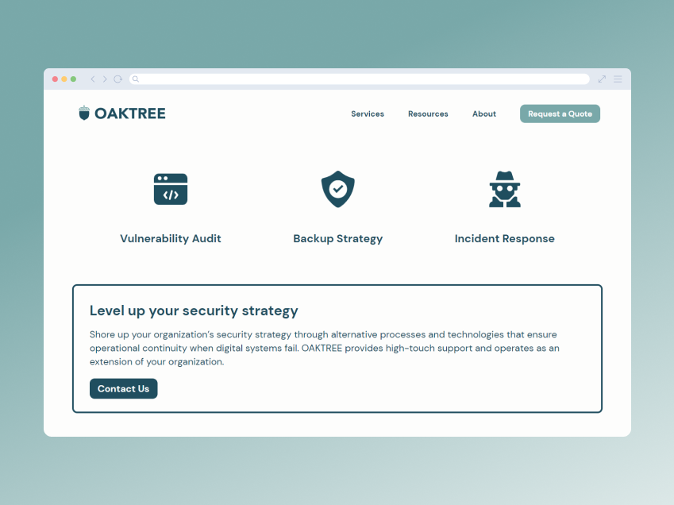
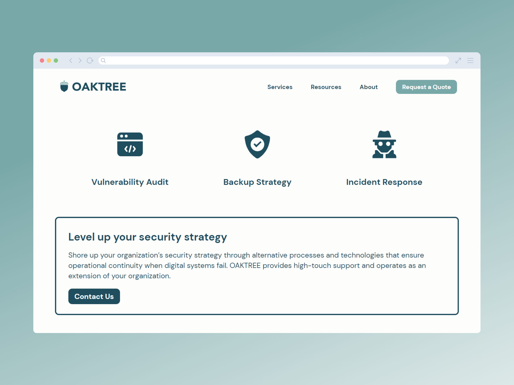
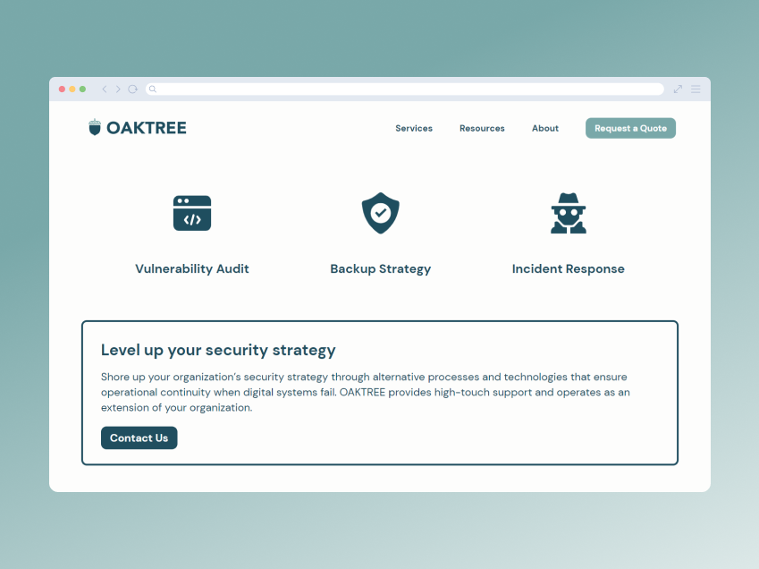
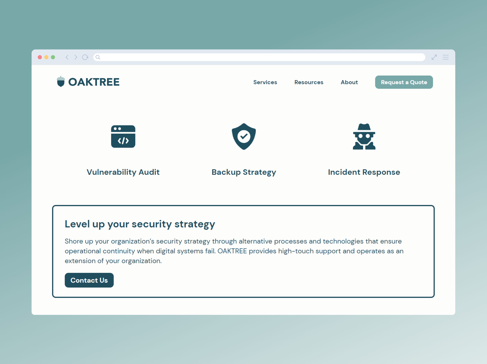

OAKTREE is a brand and landing page I designed and built as part of Codecademy’s Front-End Engineer Path.
The project assignment was to create a responsive landing page for a company of your choosing, either real or imagined. I decided to spin up a fictitious cybersecurity consulting firm called OAKTREE (Offline Alternatives Known To Rectify Entropic Events).
I used Adobe Illustrator to design a mockup of the landing page, then built out the site from scratch using HTML and CSS. I utilized CSS Flexbox and media query techniques to optimize the site across screen sizes. I also leveraged AI and design tools to create the OAKTREE logo and generate images of the leadership team.
I wrote an article on my design and development process for OAKTREE. You can check out the live OAKTREE website and view the source code on GitHub.